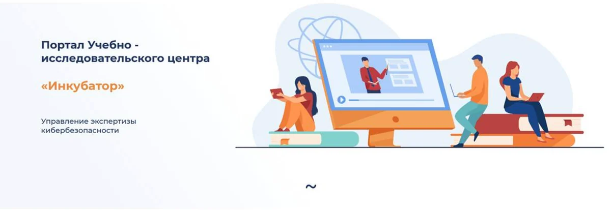
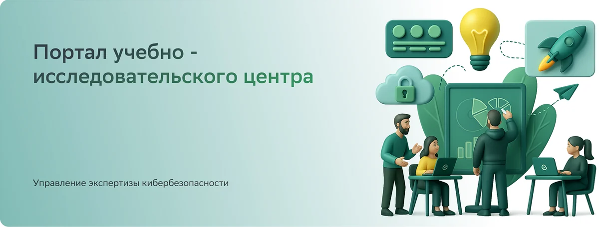
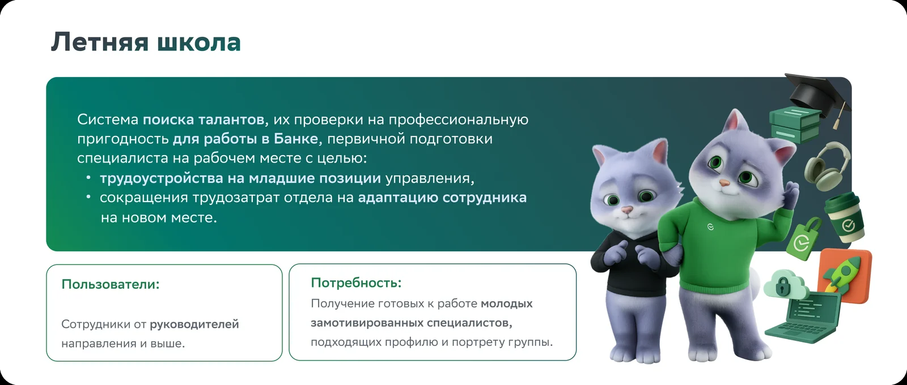
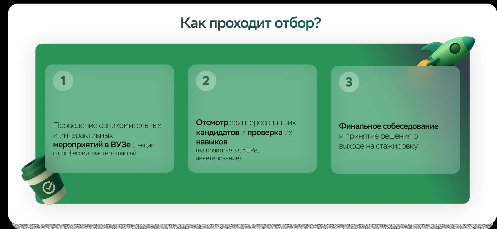

Лендинги образовательных продуктов внутренней платформы Сбера

Задача:
Внутренние курсы для стажёров содержали большой объём информации, но были оформлены как сплошной текст, и аудитории было сложно его воспринимать. Нужно было превратить этот материал в понятную и вовлекающую историю для молодой аудитории.
Вторая часть задачи была имиджевой. Курсы должны были визуально соответствовать уровню Сбера, чтобы стажёр с первых дней чувствовал себя частью единой экосистемы бренда.
Что я сделала:
- Спроектировала и оформила 20 курсов
- Выстроила информационную подачу: структурировала объёмные тексты, разбила их на смысловые блоки и перевела ключевые идеи в инфографику
- Создала иллюстрации и визуальные материалы для курсов с помощью ии, с адаптацией под стилистику бренда
- Интегрировала Сберкота, маскота бренда, в материалы отдела кибербезопасности, где раньше он не использовался. Это сделало сложную и «сухую» тему дружелюбнее и ближе к основной коммуникации Сбера (начальство было в восторге!)
- Провела редизайн внутренней образовательной платформы, которая до этого практически не имела визуального оформления
- Собрала дизайн-систему для всей платформы. В отделе нет штатных дизайнеров, поэтому система позволяет команде самостоятельно оформлять новые курсы или передавать задачи подрядчикам без потери визуальной целостности.


Особенности:
- Жёсткие рамки ТЗ и брендбука. Все решения принимались внутри строгих требований корпоративного стиля, поэтому важно было найти выразительность без выхода за границы бренда.
- Масштаб и единообразие. Большое количество курсов на разные темы требовало системного подхода, чтобы каждый лендинг выглядел частью одной линейки.
- Сложные темы для молодой аудитории. Профессиональный, местами технический контент нужно было сделать понятным и интересным, не упрощая суть. Я выступала в роли копирайтера – мне пришлось разобраться в теме ИБ!
- Работа с конфиденциальными материалами
Результат:
Стажеры проходят обучение в среде, которая ощущается частью большой экосистемы компании. А команда получила дизайн-систему и может развивать курсы самостоятельно, без постоянного участия дизайнера.

